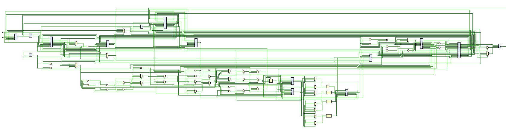

5-Stage Pipelined RISC-V RV32I Processor
A pipelined RV32I CPU with forwarding, hazard detection, and dynamic branch prediction. I have developed a standard core, a 5-stage pipelined CPU, and am currently working on an FPGA implementation.
In development- ARCHITECTURE
- RV32I · 5 stages
- IMPLEMENTATION
- SystemVerilog
- VERIFICATION
- 40 directed scenarios
- TIMELINE
- Nov 2025 — present

The problem
When designing a processor, a standard core that computes one instruction at a time is simple but not efficient. Each instruction takes an entire clock cycle to complete, leaving some components idle during that time. I initially designed a 32-bit RISC-V core that supported all the base instructions to understand the fundamentals. After designing the basic core, I wanted to improve its performance and learn about pipelining, which most modern processors use. By pipelining the CPU, I can allow multiple instructions to be processed simultaneously and reduce the time its components spend idle. However, this introduces complexity in managing data dependencies and control flow.
The design
I implemented this processor in SystemVerilog using the traditional five stages of a pipelined design: IF (Instruction Fetch), ID (Instruction Decode), EX (Execute), MEM (Memory Access), and WB (Write Back). Each stage is responsible for a specific part of instruction processing and generally uses different components. However, this introduces challenges such as hazards caused by data conflicts when an instruction requests data that is still being written or modified. To handle this, I implemented a forwarding unit that detects register dependencies and forwards data from the MEM and WB stages to the EX stage when needed. This reduced the number of unnecessary stalls in the pipeline. To further improve performance, I implemented a dynamic branch predictor that learns from previous branch outcomes to estimate whether a branch will be taken. This can reduce the number of cycles lost to pipeline stalls, since incorrect branch predictions can force the processor to redirect execution and discard instructions from the incorrect path. To test the design, I implemented comprehensive testbenches for individual modules and the CPU as a whole. These have helped identify functional issues.
The outcome
The current project combines the RV32I pipeline, dependency-handling mechanisms, and a verification environment. I am also working on adapting this core for FPGA and ASIC synthesis. This has required me to rewrite the RTL to account for delays from memory and other components and to optimize the design to meet timing constraints. The larger value of this project was learning the structures that make up a working processor, the path data takes through it, and the trade-offs involved in processor design.